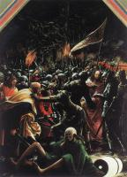

| Усекновение главы святой Екатерины
1505-06
|
 | Стигматизация святого Франциска
1507
|
 | Покаяние святого Иеронима
1507
|
 | Мученичество святого Себастьяна
1509-16
|
|  | Арест Иисуса Христа
1509-16
|
 | Отдых на пути в Египет
1510
|
 | Святой Георгий
1511
|
 | Святые Мария и Иоанн Креститель рядом с распятым Иисусом Христом
1512
|
 | Рождество
1513
|
 | Погребение
1516
|
 | Воскресение Иисуса Христа
1516
|
 | Причастие апостолов
1516-18
|
 | Бичевание Иисуса Христа
1518
|
 | Иисус Христос в Гефсиманском саду
1518
|
 | Святая Дева Регенсбургская
1519-20
|
 | Мария с младенцем
1520-25
|
 | Прощание Иисуса Христа с Матерью
1520
|
 | Иисус Христос на Кресте
1520
|
 | Пленение святого Флориана
1520
|
 | Рождество Марии
1525
|
 | Распятие
1526
|
 | Прощание святого Флориана с монастырем
1530
|
 | Мученичество Святого Флорина
1530
|
 | Святая Мария
|